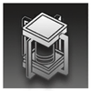

无垠回荡克雷松 Crazelyseon, the Ascendant of Cosmoi
远程 法术；领袖 坍缩体


|
无垠回荡。不可碰触，不可理解，不可逾越，在一切“理应”之上完成一切“不应”之事，在一切“有限”之上回荡一切“无垠”之物。撒播虚无的园丁，凝视空虚的哨兵。 混沌结构。它的思维如它的本能一般混沌，它的真实如它的所为一般迷乱，它究竟是什么？我们该如何描述这样一位存在？ |
“那是什么？是来自高等次元的支配者，亦或是于众寰宇中飞升之人，是审视维度一切的哨兵，还是将虚无播种于现实的园丁？”
克雷松丨Crazelyseon
大型异怪（坍缩体），无阵营
AC 23
先攻 +20（30）
HP 341（36d8+180）
速度 120尺，120尺飞行（悬浮）
| 调整 | 豁免 | ||
|---|---|---|---|
| 力量 | 26 | +8 | +8 |
| 智力 | 20 | +5 | +15 |
| 调整 | 豁免 | ||
|---|---|---|---|
| 敏捷 | 18 | +4 | +4 |
| 感知 | 18 | +4 | +14 |
| 调整 | 豁免 | ||
|---|---|---|---|
| 体质 | 24 | +7 | +17 |
| 魅力 | 28 | +9 | +9 |
技能 察觉+14
免疫 心灵；目盲，耳聋，中毒，魅惑，恐慌，麻痹，震慑，倒地，力竭
感官 真实视觉600尺，盲视600尺；被动察觉24
语言 无
CR 33（XP 230,000；PB+10）
特质 Traits
传奇抗性 Legendary Resistance（5/日）。克雷松豁免失败时，可以将其改为豁免成功。
魔法抗性 Magic Resistence。克雷松为抵抗法术和其它魔法效应而作的豁免检定具有优势。
投影解体 Projection disintegration。当克雷松在虚空外死去时，其躯体被摧毁，但是其本质会遭放逐回到虚空内，并在一段时间内无法采取物质形态。
异界思维 Otherworldly Mind。克雷松免疫所有侦测其情绪或读取其思想的效应，并且忽略任何以它为对象的预言系法术，以其为目标的感知（洞悉）检定自动失败。
不被接纳者 The Not Accepted。如果克雷松位于星门或苗圃60尺内，那么克雷松无法被现实影响，其具有全身掩护。对克雷松施展祈愿术可以将此效应压制1分钟，但施法者必须在压制期间保持专注。
超情绪实体 Emotional Entity。感知豁免检定：DC22，任意在源自克雷松120尺光环区域内开始其回合，且能感知到克雷松存在的生物。失败：目标陷入恐慌状态至多1分钟，且恐慌期间在所有D20检定上具有劣势。生物可以在其每次回合结束时重试豁免，成功则中止效应。
再坍缩 Recollapse（神话特性；长休充能）。如果克雷松的生命值被降低到0，它不会死亡。在自己下回合开始时，它立即将生命值重设为675，并立即完成大扭曲的充能，以及恢复所有已消耗传奇抗性的次数。另外，克雷松现在可以在一小时内使用“神话动作”部分中的选项。
应许的终局 The Promised End。克雷松投掷先攻后的1分钟，若生命值不低于1，则立即对1200尺内每个其所选的生物造成105（10d10+50）点无法减免的黯蚀伤害。生命值被此伤害降至0的生物遭污染，获得坍缩体模板。
动作 Actions
多重攻击 Multiattack。克雷松选择两个目标，对其各发动一次撕裂心智攻击。然后可以发动一次倒错现实攻击。
撕裂心智 Mind Ripper。近战或远程攻击检定：+19（若目标位于苗圃上则具有优势），触及10尺或射程120尺。命中：43（6d10+10）心灵伤害，且目标遭到震慑直到其回合结束。目标可以选择不受震慑，改为受到33点无法减免的心灵伤害。
倒错现实 Inverted Reality。近战或远程攻击检定：+19，触及10尺或射程600尺。命中：目标受到等于它失去生命值的无法减免的黯蚀伤害。
大扭曲 The Great Distortion（充能5~6）。克雷松振荡附近的空间并扭曲现实，将不可知之物播种现实之上。魅力豁免检定：DC27，源自克雷松120尺光环区域内每个能感知到克雷松存在的其所选生物。失败：110（20d10）黯蚀伤害，并陷入失能直到其下回合结束。成功：仅受半伤。成功或失败：生命值被此伤害降至0的生物遭污染，获得坍缩体模板。
附赠动作 Bonus Actions
播种漫游 Sowing Wanderer。克雷松传送到60尺内的任意空地上，然后，源自传送落点10尺光环区域内的地面会立即被改造为苗圃。
苗圃 Seedbeds【特殊地形】
苗圃被任何非坍缩体生物视为困难地形。苗圃会干扰上方生物的心智，无论其距离。感知豁免检定：DC27，每个位于苗圃上方开始回合，且能感知到苗圃存在的生物。失败：22（4d10）心灵伤害，且目标本回合只能执行动作或附赠动作其中之一。成功：仅受半伤。地形一旦被播种为苗圃，只有祈愿术可以将其恢复。
反应 Reactions
无根之花 Rootless Flower。触发：克雷松被一次攻击命中。响应：克雷松将触发反应的攻击改为失手，然后传送到30尺内的一处苗圃上。
传奇动作 Legendary Actions
传奇动作次数：3（巢穴内4）。克雷松可以在另一生物的回合后立即消耗一次传奇动作来执行以下一道动作。克雷松在其回合开始时回复所有已消耗的传奇动作次数。
分离撕裂 Separation。克雷松选择两个目标，对其各发动一次撕裂心智攻击。
非线性移动 Non-linear Movement。克雷松传送到30尺内的一处未被占据空间中，然后发动一次撕裂心智攻击。
神话动作 Mystic Actions
如果克雷松的再坍缩特性被激活，它可以选择以下选项作为传奇动作。
归于虚无 Return to Nothingness。克雷松宣告300尺内的一个法术或者魔法效应归于虚无。目标法术或者魔法效应结束。如果释放该法术或者制造该魔法效应的生物在克雷松300尺内，其可以通过魅力豁免（DC22）来避免效应被结束。
黑暗滋养 Nourishing Darkness。每个位于苗圃上方的生物立即受到22（4d10）无法减免的黯蚀伤害。
空间稳定设施 Dimensional Anchoring Pylon
装置；中立
|  |
与星门一样古老的神秘科技设施。它通过维度锚固技术，将坍缩的实体“锚定”到现实空间中，防止它们通过部分移位到虚空中而变得无形体，此外还在某种程度上消除了附近的坍缩污染。 |
空间稳定设施丨Dimensional Anchoring Pylon
大型物件
AC 20
HP 200
伤害阈值 20
免疫 毒素，心灵，黯蚀
特质 Traits
锚固现实 Anchoring Reality。一名60尺内的施法者可以使用动作并消耗一枚6环或更高环阶的法术位，来为设施进行充能并激活。如果克雷松位于设施1200尺内，其会将克雷松强制拉回设施60尺内的最近空地，并解除克雷松的全身掩护，并禁止其进行传送或移动，直到本轮结束。此外，如果使用9环法术位进行充能，那么设施还会立即清除60尺内的所有苗圃，并对克雷松造成90（20d8）点无法减免的光耀伤害。